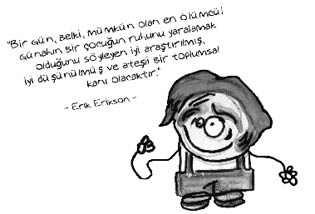

Erik H. Erikson (1902-1994)
Amerikalı psikanalist, gelişim teorisyeni.
Biyolojik babası o doğmadan önce annesini terk eden ve kimliği bilinmeyen Danimarkalı bir adamdır. Annesi doğumdan sonraki üç yıl boyunca Erik’e tek başına bakmıştır. Sonraları Erik’in doktoru olan bir Alman ile evlenmiş ve Erik’ten gerçek babasının kimliğini gizlemiştir. Bu olay Erik’in gençlik döneminde önemli kimlik sorunları ortaya çıkarmıştır. İlginçtir, bu sorunları yaşayan Erik, kimlik arayışına ilişkin teorilere ışık tutacak çalışmalar yürütmüştür. Erik’in soyadı önceleri üvey babası olan doktorun soyadı Homberger iken, Erik sonra bunu “Erik oğlu” anlamına gelen Erikson’a çevirmiştir.
Okul döneminde Yahudi ve İskandinav olduğu için bir grup tarafından alaya alınmış, “Bu Erikson, başka erik yok.” gibi esprilere de maruz kalmıştır.
Okul yıllarında sanatçı olmak isteyen Erikson, müzeleri gezip köprü altlarında yatarak Avrupa’yı gezmiş, tam “köprü altı çocuğu” olacakken Anna Freud’la tanışıp ondan psikanaliz eğitimi almıştır. Anna Freud’un isteği üzerine Viyana’daki küçük bir özel okulda sanat, tarih ve coğrafya dersleri vermeye başlayan Erik, böylece Freud ailesi ile tanışmış ve psikanalize ilgi duyarak çalışmalarını çocuklar üzerinde yoğunlaştırmıştır.
Erikson, insan yaşamını doğumdan ölüme sekiz döneme ayırır. Freud’dan farklı olarak, çocukluk dönemlerinin dışında yetişkinlik dönemlerini de incelemiş ve her dönemin ayrı gelişime imkânlar sunduğunu örnekleriyle belirtmiştir.

Ne demiş Erikson...
• Eğer her şey çocukluk dönemiyle açıklanırsa, o zaman her şey bir başkasının kusuru olarak değerlendirilir ve insanın kendi sorumluluğunu üstlenme gücüne duyulan güven de azımsanmış olur.
• Tüm bir yaşamı, tüm bir kişiliği, çocukluktaki birkaç olaya ve çatışmalara bağlamak ciddi bir indirgemecilik tehlikesi doğurur.
Neymiş sekiz evre kuramı…
Erikson, Freud’un psikoseksüel gelişim olarak tanımladığı ve cinsel gelişmeyi temel alan kuramını, psikososyal kuram adı altında yeniden incelemiş ve insanın gelişimini “İnsanın Sekiz Evresi” adı altında ele almıştır.
Her evrede benliğin karşılaştığı bir olumlu, bir de olumsuz benlik belirtmiştir. Temel güven ve bunun karşıtı olan temel güvensizlik gibi.
Güven ya da güvensizlik evresi: 0-1 yaş. Freud’un oral döneminin karşılığıdır. Bu dönemde bebekler, çevresindeki dünyaya güvenip güvenemeyeceklerine ilişkin temel duygular edinirler. Çocuğun bu dönemde ilişki kurduğu en önemli kişi anne veya anne yerine geçen kişidir. Anne-çocuk ilişkisinde tutarlılık sağlanabilirse; çocuk, annesinin kendisini hep seveceğinden ve terk etmeyeceğinden emin olma duygusu geliştirebilirse, çocukta temel güven duygusunun çekirdeği oluşur. Çocukta, iyimserlik ve mutlu olmanın temelleri bu dönemde atılır. Bebekteki sosyal güvenin ilk belirtisi, bebeğin beslenmesinin iyi, uykusunun huzurlu, bağırsaklarının rahat olmasıdır.
Bu dönemin tehlikesi, temel güven duygusunun sağlıksız gelişmesidir.
Erikson’a göre, en sağlıklı şekilde yetişmiş çocuklarda bile geçmişte bir zamanlar ana kucağında yaşanmış güzel bir cenneti yitirmiş olma duygusu ile bu cennete karşı bir özlem kalıntısı vardır. Bu cenneti yeniden bulma gereksinimi, Tanrı’ya inançla simgelenmiştir. Erikson’a göre din, insanda temel güven duygusunu sağlar.
Bağımsızlık ya da utanma, şüphecilik ve kararsızlık evresi: 2-3 yaş. Bu dönem, Freud’un anal döneminin karşılığıdır. Bu dönemde çocukların çoğu yürümekte, başkalarıyla iletişim kurabilecek kadar konuşmaktadır. Çocuklar artık tümüyle başkalarına bağılı kalmak istemezler. Önceki dönemde temel güven duygusunu kazanmış olan çocuğun, öz saygısını yitirmeksizin kendi kontrolünü kazanabilmesi için, özgürlüğü hissetmesi gerekmektedir. Kendi kendine yemek yeme, eşyalarını toplama, giyinme ve soyunma, giysisini seçme, karşılaştığı bazı problemleri çözme çabalarında teşvik edilmelidir. Böylece çocukta bağımsızlık duygusunun temelleri atılır. Kendi kendini kontrol etme ve saygının özü bu dönemde oluşur.
Bu evrede çocuk içinde bulunduğu toplumun beklentilerine göre bazı şeyleri yapmayı ya da yapmamayı öğrenir. Mesela çişini uygun zaman ve yerde yapmak üzere tutabilmeyi öğrenmek ya da utandırmalar ve cezalarla karşılaşırsa tuvaleti geldiği halde uzun süre tutmak veya altına kaçırmak gibi…
Bu dönemin tehlikesi, utanç, şüphecilik ve kararsızlık duygularının aşırı gelişmesidir.
Girişkenlik ya da suçluluk duyma evresi: 3-6 yaş. Freud’un fallik döneminin karşılığıdır. İlk iki dönemde çocukta güven ve özerklik duygularının temeli atılmıştı. Bu dönemde ise, çevreyi keşfetme ve ona egemen olma amacıyla girişim duygusunun temelleri atılmaktadır.
Çocuğun motor ve dil gelişimi, onun fiziksel ve sosyal çevresini daha fazla araştırmasına, daha atılgan olmasına olanak verir. Bu dönemde çocuğun koşmasına, atlamasına, oynamasına izin verilmelidir ki çocukta girişkenlik duygusu gelişebilsin. Doğal merakından dolayı çok sık azarlanan ve engellenen çocukta, bu dönemde suçluluk duygusu gelişmektedir.
Yine bu dönemde çocuğun cinsel organlara yönelik ilgileri de artar. Bu merak onu çocuklar arası cinsel oyunlara ve büyüklerin cinsel yaşantısına aşırı ilgiye götürebilir. Bu dönemde aşırı korkutma, suçlandırma veya ceza çocuğun ileriki yaşamında cinsel sorunlar yaşamasına yol açabilir.
Bu dönemin tehlikesi, aşırı suçluluk duygusunun gelişmesidir.
Başarı ya da aşağılık duygusu evresi: 6-11 yaş. Freud’un gizil döneminin karşılığıdır. Çocuk, bu dönemde tek başına bir şeyler yapamayacağını sezerek başkaları ile işbirliği kurmaktan ve birlikte çalışmaktan haz almaya başlar. Okula gittiği için sosyal dünyasında büyük bir genişleme meydana gelir. Çocuk, artık ortaya çıkardığı şeylerle başkaları tarafından tanınmak ister. Başarılarından gurur ve zevk alma duygusu gelişmiştir.
Erikson’a göre birey kişilik gelişim dönemlerinden ilkinde “Bana ne verildiyse ben oyum.” ikincisinde “Ne yaparsam oyum.” üçüncüsünde “Hayal ettiğim şeyi olacak kişiyim.” dördüncüsünde “Ne öğrenirsem oyum.” inancına sahiptir.
Arkadaşlar ve öğretmenin çocuk üstündeki etkisi artarken ana-babanın etkisi giderek azalır.
Çocukların çabaları desteklendiğinde, çalışma ve başarılı olma davranışları gelişir. Aksi takdirde sürekli olarak yaptıklarında eleştirilen, desteklenmeyen, beğenilmeyen çocuklar, yaptıklarının değersizliğine inanarak aşağılık duygusu geliştirebilirler.
Kimlik kazanma ya da kimlik karmaşası yaşama evresi: 11-20 yaş. Çocukluk ve yetişkinlik arasında, “ergenlik” olarak da adlandırılan bir geçiş dönemidir. Kişi toplumsal yerini, mesleksel konumunu ve cinsel kimliğini tanımaya, yerine oturtmaya çalışır. Bu dönemdeki çabalamaya kimlik bunalımı denir. Kimlik bunalımı ile kimlik karmaşası farklı şeylerdir. Ergenlik bir nevi değişme dönemidir. Bu dönemde “Ben kimim?” sorusu çok önemli hâle gelir. Kişinin üstünde akran gruplarının büyük bir etkisi vardır. Çevresinde model alabileceği yetişkinlerin bulunması önem taşımaktadır.
Erikson’a göre kişi bu dönemde başarılı bir şekilde kimlik kazanma sorununu çözerse kendine güvenen, kendinden emin bir kişi olarak yaşamını sürdürür.
Yakın ilişkiler kurma ya da soyutlanma evresi: Yaklaşık olarak 18-26 yaşlarını kapsar. Ergenlik döneminde kimliğini bulan kişi bu dönemde artık başkalarıyla yakınlıklar, dostluklar kurabilir. Karşı cinsle arkadaşlıkta, sevgi ağırlık taşır. Gencin yaşamında evlilik ve iş kariyeri önemli hâle gelir.
Kimlik bocalamasından henüz çıkamamış kişiler için bu dönemin tehlikesi psikolojik yalnızlık duygusudur.
Üretkenlik ya da kısırlık evresi: Bu dönem orta yetişkinlik yıllarını kapsar. Birey için çocukları yoluyla neslini devam ettirmek önemli olduğu gibi evi dışında da gelecek nesillerin yetişmesine rehberlik ederek üretken olabilir. Ya da üretken olmadığında bir işe yaramama duygusuna kapılıp durgunluk içine girebilir.
Bireyin bu dönemdeki krizi olumlu bir şekilde atlatmasında evini, işini paylaştığı kişilere önemli roller düşer.
Benlik(ego) bütünlüğü ya da umutsuzluk evresi: İleri yetişkinlikteki yılları kapsar. Benlik bütünlüğü, olumlu olumsuz, acı tatlı yönleri ile yaşamın bir bütün olduğunu kabulleniştir. Geleceğin korku ve endişe ile karşılanmamasıdır. Eğer daha önceki evreler sağlıklı şekilde yaşanmışsa, kişi yaşlılığı ve ölümü de yaşamın doğal bir parçası olarak görür ve huzurludur. Benlik bütünlüğü duygusundan yoksun olan kişi, yaşamını yeni baştan yaşama özlemi duyar ve ölümden çok korkar, umutsuzluklar içinde, hırçın ve aksi bir insan görünümündedir.
Erikson’a göre, her gelişen dönem kendisinden sonra gelen döneme bir zemin hazırlar ve daha sonra gelen dönem önceki dönemlerden etkilenir. Yani daha önceki dönemler sağlıklı gelişmiş ya da gelişmemişse, sonraki dönemlerin gelişimi de bundan büyük ölçüde etkilenecektir.